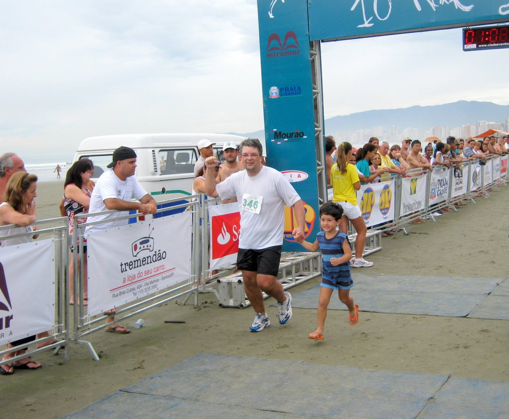

vamo, vamo, vamo…
Posts tagged corrida
Corrida Infantil da Corpore
68 years
by Alecão
in Ex-sedentário
 Ol√≠via, Henrique, Dante e Maur√≠cio participaram da corrida infantil da Corpore, foi a primeira corrida de cada um. Clique na foto e veja todas as fotos que eu tirei. A Ol√≠via e o Maur√≠cio (meus filhos), não se cabiam de tanta alegria (2 medalhas no mesmo dia). E querem mais… Tenho v√≠deos tamb√©m que irei postar em breve.
Ol√≠via, Henrique, Dante e Maur√≠cio participaram da corrida infantil da Corpore, foi a primeira corrida de cada um. Clique na foto e veja todas as fotos que eu tirei. A Ol√≠via e o Maur√≠cio (meus filhos), não se cabiam de tanta alegria (2 medalhas no mesmo dia). E querem mais… Tenho v√≠deos tamb√©m que irei postar em breve.
Meia maratona de SP
78 years
Nem sei como começar esse post de tão feliz que fiquei, foi uma corrida muito divertida, largamos juntos o Paulo e eu, ele saiu muito rápido eu fui acompanhando logo no 1º km o Paulo estabelece um ritmo e eu sigo em frente sozinho para encarar os próximos 20 km e assim segui fui num ritmo confortável media de 5min por km, só consegui pegar água com 6 km de corrida, mas isso não me atrapalhou com 8 km de prova tomei meu 1º sache de carboidrato e o 2º com 16 km que foi o suficiente para completar bem a prova.
Não sei por que eles oferecem Gatorade nessas competições, vira uma bagunça e a pessoa perder muito tempo pra pegar, deve ter um jeito mais eficiente de fazer isso.
Meu tempo e classificação geral

Fotos e video da chegada.


Vídeo
XIII Troféu Cidade de São Paulo Carrefour Viver 10 Km
158 years
by Alecão
in Ex-sedentário
O nome da prova √© tão grande que tiveram que escrever em arco na medalha… üôÇ


Tinha prometido que iria correr na sexta feira anterior ao evento, o que não aconteceu por conta da chuva e compromissos, mas na quinta eu treinei (apesar de não ter postado), foi um treino bem cansativo, acho que meu corpo ainda não tinha se recuperado do treino de terça e quarta.
Esta seria minha primeira corrida sozinho, mas meu sogro participou comigo, foi muito legal ter mais um ex-sedentário se juntando ao time. Era a primeira corrida dele.
“Correu” tudo bem, foram 6¬†quil√¥metros¬†e um pouquinho. E essa foi a grande surpresa. Porque, quando vi a marca de 6 quil√¥metros, fiquei procurando o tapete de chegada e nada. Com isso desanimei (como a maioria dos corredores de 6 Km) e terminei a prova andando, a chegada estava a mais de 800 metros a frente da marca de 6 Km. Não entendi porque isso aconteceu. Falando em organiza√ß√£o. Algumas coisas estavam precárias, como o barro que se formou, que quase escorreguei por 2 vezes, em volta do Obelisco. O kit era montado na hora com uma ma√ß√£, um Marathon e a medalha em dezenas de filas que davam em um balcão que prendia a pessoa na hora de sair.
Bem, meu tempo no meu relógio (quando cruzei a marca de 6 Km) foi de 55 minutos, repetindo a performance da corrida de natal. Mas esta corrida, ao invés da de natal, teve muito sol e com várias subidas e descidas da Rubem Berta. Portanto acredito que estou melhor que em dezembro. Bom saber que estou melhorando meu corpo aos poucos e sinto isso no dia-a-dia.
Incrível foi meu sogro, que nunca havia participado de corridas e sempre esteve ao meu lado. Gostou e disse que quer participar da próxima, e pode deixar que eu aviso sim.
Os tempos e colocações oficiais (furados na minha opinião) estão aqui, eu sou o número 8938 e meu sogro é o 9101.
Mais notícias sobre o XIII Troféu Cidade de São Paulo Carrefour Viver 10 Km:


Eu e o Henrique: muita emoção!
128 years
by Claudião

Eu e o Henrique
Eu não brinquei quando disse que abriria meu descanso com uma corrida de 10km. Eu cheguei na praia no sábado às 23:30 horas. Pilhado porque tinha passado as 24 horas anteriores correndo para deixar tudo no esquema para a minha merecida semana de descanso. Só consegui dormir as 03:00 horas e as 06:00 levantei e fomos de Itanhaém para Praia Grande. Mari, Henrique, com sono e eu. Já está virando rotina. Segunda largada de corrida e eu no banheiro químico, mas desta vez só número 1, sem complicação. Pouca gente na corrida e percurso na areia da praia, muito bom. Foi menos fácil do que esperava. As poucas horas de sono, cansaço acumulado e a maresia (estranhei bastante a roupa colada e me sufocando embora tivesse bem mais fácil manter a respiração), todos esses fatores somados, fez com que eu ficasse visualizando o Henrique me esperando de sorriso e braços abertos, para poder me manter no meu rítmo.
Correr naquela areia batida é muito bom, mas os riozinhos para serem pulados e a mesmice da paisagem só foram superados pela festividade do evento. Durante o restante da semana eu não consegui correr nenhum dia na praia por mais de 2km.
Mas na chegada o Henrique me aguardava e cruzamos juntos a linha de chegada com direito a comentário da Locutora. Foi muito emocionante para mim. Um ano atrás eu mal conseguia fazer castelos de areia com o meu filho e agora, cruzando a linha de chegada de uma corrida com ele. Dando a ele o prazer de pegar “a nossa medalha de campeão”. Chorei s√≥ um pouquinho, mas eu encheria um caminhão com a minha emo√ß√£o.
No decorrer da semana dei férias para a dieta e consumi doces que compensaram os que deixei de comer em 2009 todo. Agora é bola pra frente. Dieta e retorno as corridas que só estão me dando prazer. A foto diz tudo.
529 346 CLAUDIO LUCIO DUNDES 36 M0099 525 M EX-SEDENTARIO 01:08:21 01:06:46


Corrida Sesc Santo Amaro
28 years
Esse ultimo domingo fui correr os 10km do SESC Santo Amaro, prova muito boa no começo estava preocupado porque não treinei na ultima semana mas me senti muito bem durante a prova, durante os primeiros 5km sem sinal de fadiga eu estava 100% quando contornei e estava chegando ao 6Km estava com muito pique e comecei a abrir a passada e completei a prova em 47Min e 45Seg, terminei bem e logo estava recuperado na classificação geral fiquei em 274º num total de 848 inscritos masculino, fiquei muito feliz com o tempo essa semana volto a treinar normal.
Referente ao post feito pelo Claudio sobre os preços da Corpore essa corrida do SESC não deixou nada a desejar em comparação a ela, a camiseta muito boa e a medalha de melhor qualidade e pelo preço de 15 Reais a inscrição é isso mesmo 15 Reais, sou comerciário, mas para quem não é o preço fica sendo 30 Reais o que esta ótimo, eles dão lanchinho no final, isotônico e água igual todas as corridas, parabéns ao SESC pela organização.


Feliz Natal – correndo
28 years
by Alecão
in Ex-sedentário
 Sábado passado eu, Claudio, Thiago e Paula, encaramos a prova de natal da Corpore. Foram 6 km que eu encarei correndo o tempo todo (ou quase).
Sábado passado eu, Claudio, Thiago e Paula, encaramos a prova de natal da Corpore. Foram 6 km que eu encarei correndo o tempo todo (ou quase).
Foi um desafio e tanto, pois não tive uma semana legal, encarando alguns medos interiores, mas a corrida veio e revitalizou meus pensamentos. E que venha os desafios!
Desta vez a minha fam√≠lia estava lá. Minha mulher torcendo por mim e meus filhos vendo o papai correr. Coitados, foram na esperan√ßa de ver o “Show da Turma da M√¥nica” e apenas viram a M√¥nica mandando beijinhos e distribuindo alguns abra√ßos. Posso dizer que isso faz a total diferen√ßa. Motiva saber que eles estarão na linha de chegada esperando a gente.
Largamos, eu, Claudio, Thiago e Paula. No primeiro quil√¥metro eu acompanhei quanto pode, tanto que fizemos em pouco mais de 7 minutos. Mas a partir de ai, percebi que estava puxado e falei para o Claudio que iria diminuir o r√≠timo. Segundo quil√¥metro em 8 minutos e diminuindo… Mesmo porque para chegar no terceiro quil√¥metro, foi necessário encarar a subida que tem ap√≥s o portão do IPT. Nesta subida senti o f√≠gado e sugeri ao Claudio para continuar o r√≠timo enquanto eu caminhava para recuperar, foram 200m e logo chegamos no topo e depois era descida e plano apenas… Não parei e consegui acelerar um pouco no final antes de cruzar a linha de chegada. Muito legal, muito emocionante, muito tudo.
Na chegada, o Claudio disparou e correu até a galera pegando o Henrique e o Maurício no colo. Vi que ele queria me dar o Maurício, mas no estado que estava não iria conseguir segurá-lo e ele acabou cruzando com os dois no colo. Foi bem emocionante.
Thiago e Paula, cruzaram a chegada ao tempo de 45 minutos de prova (aproximadamente).
Eu e o Claudio cruzamos com 55 minutos.
Quero mais!


Circuito Sesc de corridas (prova rústica)
28 years
Fala pessoal, depois de algumas semanas sem treinar por causa das provas na faculdade estou voltando, ontem fui correr os 7km do SESC Interlagos, uma ótima prova com vários tipos de terreno, tinha muita lama por causa da chuva mas foi muito bom, corri junto de minha namorada primeira prova dela então fomos devagar correndo e caminhando, mas correndo que caminhando, o tempo foi de 59min 42seg ainda rolou um uma disputa no fim da competição pois tinha algumas pessoas completando junto com a gente, foi fantástico.
Esta semana volto a treinar, amanha pretendo rodar uns 6km para avaliar como estou e daí começar a preparar um treino, bom é isso galera um grande abraço e boas corridas.

Cheguei
118 years
by Alecão
in Ex-sedentário
 Pensei muito para escolher o t√≠tulo deste post, mas a única coisa que veio a cabe√ßa foi a palavra “Cheguei”.
Pensei muito para escolher o t√≠tulo deste post, mas a única coisa que veio a cabe√ßa foi a palavra “Cheguei”.
Pois é, cruzei a linha de chegada após 10 quilômetros.
Na largada tudo √© muito emocionante, aquele mar de gente com camisa azul. Depois foi 1, 2, 3 quil√¥metros… cansando… 4… e me deu hiperventila√ß√£o, foi uma sensa√ß√£o muito estranha e continuei andando a passos largos e rápidos, sempre ditados pelo Claudio que me acompanhou o tempo todo, mesmo tendo folego para ir a frente.
Ai por diante foi altern√¢ncia entre corrida e caminhada, mais caminhada que corrida. Meu corpo aguentava mas minha respira√ß√£o não… Parecia ser imposs√≠vel a chegada. No quil√¥metro 7 consegui at√© uma boa arrancada e finalmente¬† CHEGUEI. E tem at√© um v√≠deo para mostrar isso.
A maior alegria foi ter o apoio do Claudio o tempo todo do meu lado, falando, incentivando, torcendo e me envergonhando üôÇ . E o abra√ßo na linha de chegada foi o dos melhores.
Consegui, consegui, consegui, consegui, consegui… eu Cheguei…
.jpg "DSC01703 (576x1024)")
.jpg "DSC01855 (1024x576)")

.jpg "IMG_7305 (768x1024)")


{kind=link}
{kind=link}
{kind=link}
{kind=link}
{kind=link}
√öltimos comentários